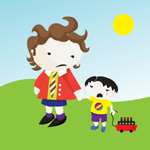
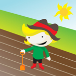

Lesson Forty One – Relatives
In this lesson you'll learn how to describe members of your family, such as brother, sister, uncle and aunt. You'll learn how to say he had, they had and had you? so you can ask about different members of the family.
ROLEPLAY
At the end of the lesson you'll listen to a roleplay between Pádraig and Cáit who are talking about a strange man who has appeared out of nowhere. Who is he and what is he doing here?
Lesson Forty Two – Professions
In this lesson you'll learn words to talk about different professions, such as doctor, dentist, nurse and shopkeeper. You'll learn how to say would you like? I would like and I wouldn't like so you can talk about what you'd like to be when you grow up!
ROLEPLAY
At the end of the lesson you'll hear a roleplay between Cáit and Nóra. Cáit would love to go to the cinema tonight, but will she be able to...?
Lesson Forty Three – Servings at the dinner table
In this lesson you'll learn how to talk about crockery at the dinner table. You'll learn new verbs to show, to get and to give so you'll be able to ask people to pass you items at the table. You'll also learn the word for a piece so you can ask for servings of your favourite foods.
ROLEPLAY
At the end of the lesson you'll listen to a roleplay between Nóra and Cáit. Cáit has called in to see Nóra for afternoon tea. But what is wrong with the cake?
Lesson Forty Four – Visiting places
In this lesson you'll learn words to say you are going to somewhere with phrases like to the school, to the chapel, to the house, to the town and to the shop. You'll also learn how to ask did they go? didn't they go? as well as how to say they went and they didn't go.
ROLEPLAY
At the end of the lesson you'll hear a roleplay between Pádraig and Seán. Pádraig is about to go to the station and invites Seán to go with him. Can you figure out why Pádraig wants to go?
Lesson Forty Five – Age - from 50 to 100 years old!
In this lesson you'll learn how to talk about someone who is aged between 50 and 100! You'll learn how to talk about age, and how to say how old someone is in years.
ROLEPLAY
At the end of the lesson you'll listen to a roleplay between Cáit and Nóra. Cáit and Nóra are talking about Úna Mháire, who was at the dance last night. It's lucky she can't hear them! What do you think they're saying...?
Lesson Forty Six – I must
In this lesson you'll learn how to talk about things that you must do. You'll also learn the verbs to read and to write. You'll see a boy who must do things he doesn't want to, like schoolwork, taking medicine and fetching the coal. Oh dear! I hope he finds something he wants to do soon!
ROLEPLAY
At the end of the lesson you'll hear a roleplay between Nóra and Pádraig in the house. Nóra is very unhappy with her coat. Can you figure out why? And what does Pádraig have to say about it all?

Lesson Forty Seven – Crops and seasons
In this lesson you'll learn words to describe the seasons. You'll also learn to talk about crops such as oats, wheat and potatoes being sown as well as when they being reaped. And you'll learn the words for done, spent, gone away and broken.
ROLEPLAY
At the end of the lesson you'll listen to a roleplay between Pádraig and Séamas. Pádraig meets Séamas under unusual circumstances. What is going on and what do they talk about?
Lesson Forty Eight – Out of...
In this lesson you'll learn words to talk about the direction that someone is going in. You'll learn how to say out of the house, out of the garden and out of the park. You'll also learn the verb to go, so you can say he is going, he went and did he go?
ROLEPLAY
At the end of the lesson you'll hear a roleplay between Pádraig and Seán. Pádraig is doing an odd job outside the house. What he is doing, and will he allow Seán to help?
Lesson Forty Nine – Tell your mother...
In this lesson you'll learn the verb to tell. You'll learn new words such as milkman and postman and you'll watch a young boy try to find someone to play with. Will he have any success? Everyone is palming him off with phrases like tell your father to do it or tell your mother to do it. Oh dear! I hope he finds someone to play with soon.
ROLEPLAY
At the end of the lesson you'll listen to a roleplay between Nóra and Seán. Nóra is asking Seán where his sister has got to. Why does Nóra want her to come inside and does Seán know where she is?
Lesson Fifty – I see, I think, I believe and I understand.
In this lesson you'll learn how to say I see, I think, I believe and I understand. You'll revise the words for broken, made, spent and gone, and then you'll put them all together in sentences.
ROLEPLAY
At the end of the lesson you'll hear a roleplay between Pádraig and Nóra. Pádraig has been outside working in the garden all day and he comes inside looking for refreshment. Will he be able to find anything to drink in the house?
Go back to main lesson list >>